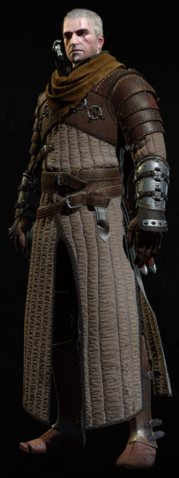

Школа медведя
Упоминания в книгах нет. Полностью придумана разработчиками игры.
Странная школа. Ведьмаки из цеха Медведя предпочитают тяжёлый доспехи. Было бы ещё лучше, сражайся они мечом и щитом. Тогда им бы не хватало лишь рыцарской присяги. Из эффекта навыка "Техника школы Медведя" в третьей части игры, можно предположить, что ведьмаки данной школы отличались крупным телосложением, а в бою полагались на силу ударов и крепость доспехов.
